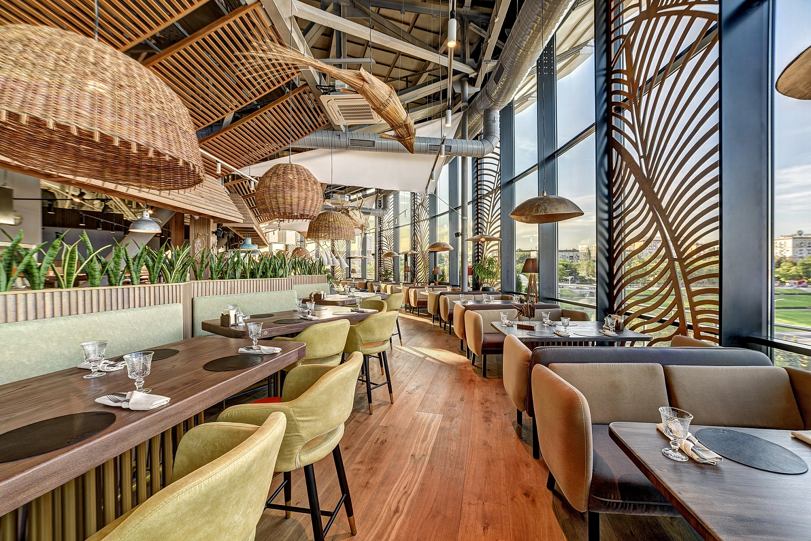

Памятники города Волгограда
- Родина-мать
- Памятник мирным жилетям Сталинграда
- Памятник Александру Невскому
«Родина-мать зовёт!» — скульптура, композиционный центр памятника-ансамбля «Героям Сталинградской битвы» на Мамаевом кургане в Волгограде. Одна из самых высоких статуй мира, высочайшая статуя России (без постамента — самая высокая статуя в мире на момент постройки и в течение последующих 22 лет).
Подробнее о Родине-матери|  |
Ресторан-курорт с ремейками популярных блюд русской кухни от северных просторов до южных берегов вдоль бассейна реки Волги. У нас представлены топ-блюда кухни 5-ти морей: от средиземноморских устриц и камчатских крабов до традиционных хачапури и рыбной ухи. Cайт ресторана |